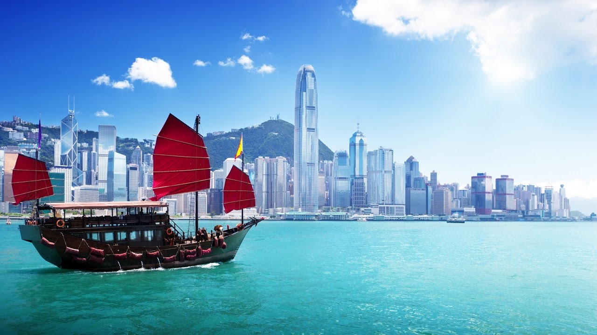

Hong Kong
Geography and Location
Hong Kong is an Administrative Region of China Contrary to many people's basic knowledge, Hong Kong is not a state or country but an administrative region of China.Subtropical Hong Kong has four distinguishable seasons - warm and humid spring, hot and rainy summer, pleasant and sunny autumn, cool and dry winter. ... The ideal travel season is late autumn, from October to around Christmas time when Hong Kong weather is relatively more pleasant.
Explore Hong KongHong Kong is most famous for its travel and shopping. It is one of the best places for travel and holiday in the world. There are so many tourist attractions in Hong Kong and you can experience different culture in this city. Temples in Hong Kong are among one of the most visited attractions in Hong Kong. |

|

|
 |